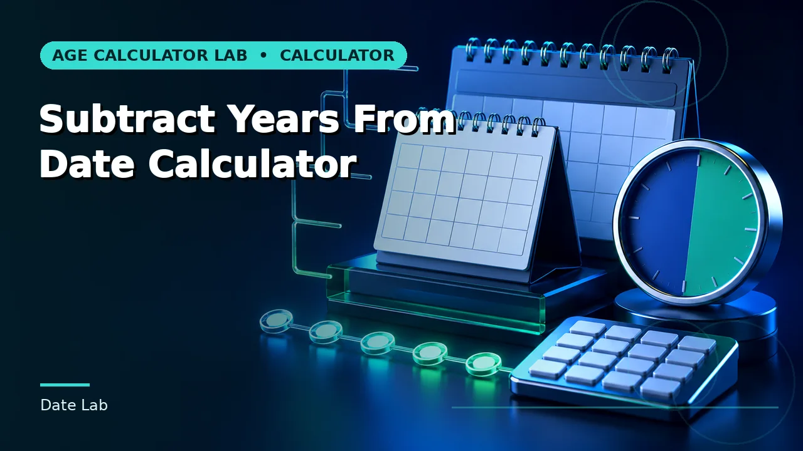

Date Lab
General calendar arithmetic: durations, date shifts, weekdays, ISO weeks, quarters and working days.

Days Between Dates Calculator
Elapsed calendar days between two dates.

Date Difference Calculator
Calendar difference in years months days and total days.
Time Between Dates Calculator
Calendar duration between two selected dates.
Add Days to Date Calculator
A future or past date after adding calendar days.
Subtract Days From Date Calculator
A date found by subtracting calendar days.
Add Weeks to Date Calculator
A date after adding complete seven-day weeks.
Subtract Weeks From Date Calculator
A date found by subtracting complete weeks.

Add Months to Date Calculator
A calendar date shifted forward by complete months.

Subtract Months From Date Calculator
A calendar date shifted backward by complete months.
Add Years to Date Calculator
A calendar date shifted forward by complete years.

Subtract Years From Date Calculator
A calendar date shifted backward by complete years.

Business Days Calculator
Weekdays between two dates with weekends excluded.

Workdays Between Dates Calculator
Monday-to-Friday workdays across a date interval.
Week Number Calculator
ISO week number for a selected calendar date.

Day of Year Calculator
Ordinal day number within the selected year.

Days Left in Year Calculator
Remaining calendar days before the end of the year.

Leap Year Calculator
Whether a selected year follows the Gregorian leap-year rule.
Weekday Calculator
Day of the week for any valid calendar date.

Months Between Dates Calculator
Complete calendar months and residual days between dates.
Years Between Dates Calculator
Complete calendar years plus remaining months and days.
Date Midpoint Calculator
The exact midpoint date between two calendar dates.
Inclusive Date Count Calculator
The number of calendar days with explicit start- and end-date inclusion.

Business Date Shift Calculator
A date moved forward or backward by weekdays.
Recurring Date Calculator
The next occurrence in a repeating day, week, month or year schedule.
ISO Week to Date Converter
The calendar dates covered by a given ISO-8601 week number and week-year.

Fiscal Quarter Calculator
The fiscal quarter, quarter start and quarter end for any date and fiscal-year start month.
Quarter End Date Calculator
The last day of the calendar or fiscal quarter containing a chosen date.
Working Hours Between Dates Calculator
Scheduled working hours between two dates using a chosen working day length.
Time Zone Date Difference Calculator
The real elapsed interval between two local date-times in different UTC offsets.

Countdown to Any Date Calculator
Days, weeks and weekdays remaining until any chosen target date.

Days Until Christmas Calculator
The number of days remaining until the next 25 December.
Days Until New Year Calculator
The number of days remaining until the next 1 January.
Weeks Between Dates Calculator
Complete weeks and remaining days between two calendar dates.
Public Holidays Between Dates
The public holidays falling between two dates in a chosen jurisdiction, including substitute days.
Guides for this category
Understand the conventions before the number goes into a record or a decision.
Browse the rest of the 161 calculators
Ten more groups covering assessments, pregnancy, work, dates and cultural references.